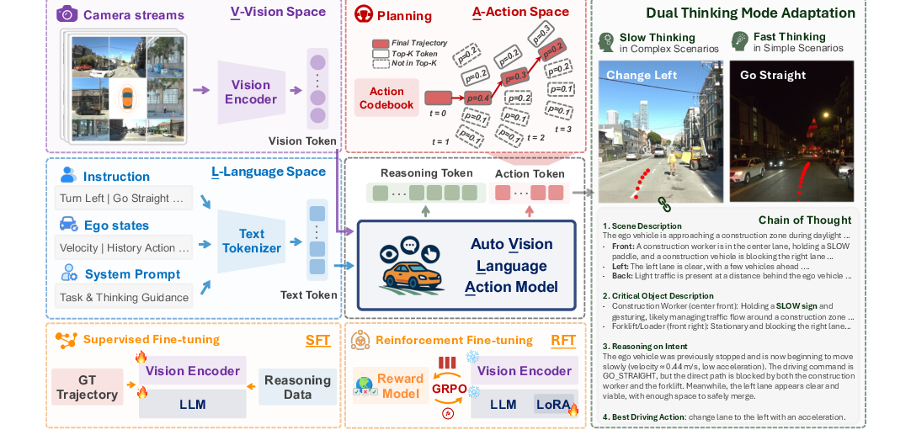
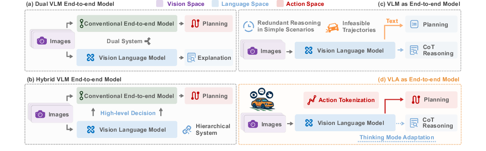
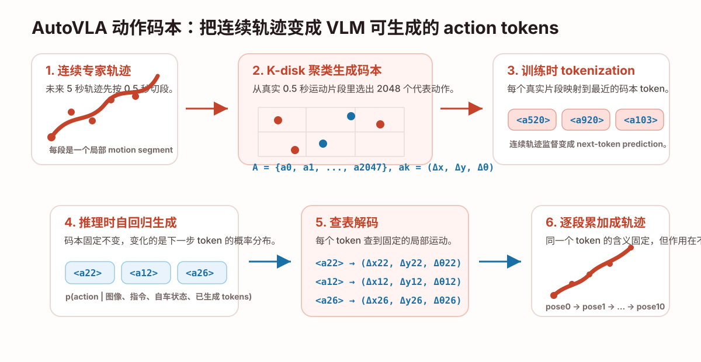
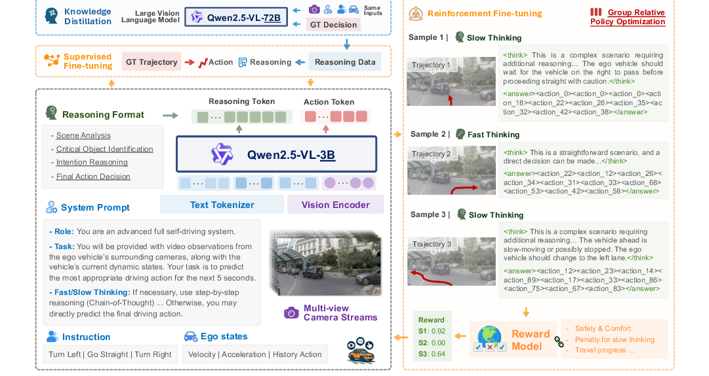

一句话总结
AutoVLA 的核心不是简单“让 VLM 开车”，而是用 physical action codebook 把低层连续轨迹变成离散 action tokens， 从而把场景推理、动作生成和强化后训练统一进一个 autoregressive VLA 框架。
论文要解决的问题
传统 end-to-end driving 可以直接从图像输出轨迹，但往往缺少 world knowledge 和 semantic reasoning。 VLM/VLA 可以理解复杂场景，却经常卡在语义推理和物理动作之间：会说“施工区域应该变道”， 但不一定能输出未来 5 秒可执行、平滑、物理合理的轨迹。
- 动作不可行：直接让 VLM 输出文本 waypoint 或坐标，容易格式错误、数值不准、轨迹不平滑。
- 结构复杂：外接 planner 或 decoder 可以提高轨迹可行性，但会破坏统一端到端结构。
- 推理低效：复杂场景需要 CoT，简单场景不需要每次都长篇 reasoning。

创新点怎么理解
Physical action codebook
把连续 5 秒轨迹切成 10 个 0.5 秒 motion segments，每段映射到 2048 个码本 token 之一。
这样 VLM 不再回归连续坐标，而是生成 <action_k>。
Unified reasoning and action
输出序列同时包含 <think> 中的 reasoning tokens 和 <answer> 中的 action tokens，
不需要另一个模型单独把高层决策解码成轨迹。
Fast / slow thinking
SFT 同时喂 action-only 样本和 CoT-enhanced 样本，让模型简单场景能直接出轨迹，复杂场景能先结构化分析。
GRPO-based RFT
RFT 的 reward 是 r = rDriving - λrCoT，既奖励驾驶质量，也惩罚过长 CoT，
让模型学会减少无意义慢思考。
相比 LVDrive / World4Drive 侧重 future latent 或 latent world model，AutoVLA 的重点是 输出空间设计：把轨迹变成 VLM 可以直接生成的动作词表。
Figure 2：四种范式对比

Dual VLM 系统像“一个模型开车，一个模型解释”，VLM 的解释未必真正影响轨迹； Hybrid VLM 系统让 VLM 输出高层决策，再交给传统规划器，仍然不是完整统一优化； VLM as E2E 直接输出轨迹或文本，容易产生不可行轨迹和冗余推理。 AutoVLA 的回答是：把 action tokenization 接进 VLM，让模型直接生成可解码为轨迹的 action tokens。
码本 Codebook 细读

码本是什么
codebook 可以理解成自动驾驶动作空间里的“词表”。普通 LLM 的词表里有文字 token；
AutoVLA 的动作词表里有 <action_0> 到 <action_2047>。
每个 action token 背后存的是一个局部短时车辆运动：
ak = (Δx, Δy, Δθ)
这里的 Δx、Δy、Δθ 是相对于当前 0.5 秒片段起点的局部运动变化：
沿当前车体坐标前进多少、横向偏移多少、车头方向改变多少。
码本怎么构建
- 从 WOMD 真实轨迹中采样 0.5 秒车辆运动片段，真实世界实验共用这个码本。
- CARLA 仿真由于动力学不同，单独从 CARLA-Garage 构建仿真码本。
- 每个 segment 用最终帧 bounding-box contour 表示，距离用 average contour distance。
- 用 K-disk clustering 选出 2048 个彼此足够不同的代表片段，阈值
δ = 0.05 m。 - 每个代表片段抽出
(Δx, Δy, Δθ)，成为一个 action token。
为什么不用直接输出 x/y
语言模型不擅长精确连续数值回归。直接输出文本 waypoint 容易慢、格式不稳、数值误差大。 论文 Table 5 显示，physical action tokenization 比 text waypoint 明显更好：
| 输出方式 | PDM Score ↑ | Avg L2 ↓ | Avg Col. ↓ | Runtime ↓ |
|---|---|---|---|---|
| Text Waypoint | 71.31 | 0.89 | 0.36 | 7.65 s |
| Physical Action | 80.54 | 0.70 | 0.31 | 3.95 s |
为什么选 K = 2048
| K-disk codebook size | ADE ↓ | FDE ↓ | Movement Coverage ↑ | Codebook Usage ↑ |
|---|---|---|---|---|
| 256 | 0.0687 | 0.1034 | 86.47% | 100.0% |
| 1024 | 0.0253 | 0.0282 | 97.41% | 100.0% |
| 2048 | 0.0182 | 0.0203 | 99.42% | 100.0% |
| 4096 | 0.0141 | 0.0155 | 100.0% | 91.46% |
2048 是折中点：重建误差已经很低，运动覆盖达到 99.42%，并且 usage 还是 100%。 到 4096 虽然误差继续下降，但很多 token 开始冗余。
自回归生成时码本会变吗
不会。码本是固定的查表结构。自回归过程中变化的是：
p(action_i | image, instruction, ego state, previous tokens)
也就是每一步模型对下一个 action token 的概率分布会变，因为上下文多了前面已经生成的 token。
但每个 <action_k> 对应的 (Δxk, Δyk, Δθk) 不会变。
同一个 token 的局部含义固定，但它作用在不断更新的 ego pose 上。 如果前几步已经让车头转了，下一个“向前”token 映射到全局坐标时方向也会随当前车头改变。
训练流程：SFT 到 RFT

SFT
SFT 的输出序列是 x = [l1, ..., lL, a1, ..., aT]：
前半是 reasoning tokens，后半是 action tokens。训练目标包括标准 causal language modeling loss，
以及额外 action loss：
LSFT_i = wi · (LLM_i + λa Laction_i)
wi = λcot if CoT is present, otherwise 1
λa = 1, λcot = 40这个权重说明作者很强调 CoT 样本，避免模型只学会 action-only 快输出。
Reasoning data
CoT 数据由 Qwen2.5-VL-72B 自动标注，并用 GT driving action 作为 hint。 这能减少胡乱解释，但也意味着不少 reasoning 是“已知专家动作后的事后解释”。
RFT / GRPO
RFT 对同一场景采样一组候选输出，解码 action tokens 得到轨迹，再用 reward 比较好坏。 最终 reward 是：
r = rDriving - λr rCoT
在 NAVSIM 上 rDriving = PDMS；Waymo 上由于 RFS 标注少，用 normalized ADE。
rCoT 是 CoT length penalty，用来减少简单场景中的冗余慢思考。
把你问过的问题整理一下
1. K-disk 是什么
K-disk 是一种覆盖式聚类/采样方法。它从大量真实短时运动片段中选 K 个代表样本，
并要求被选中的片段之间距离不能太近。AutoVLA 用 average contour distance 和 δ = 0.05 m
保证 2048 个 token 覆盖多样运动，而不是都集中在最常见的直行动作附近。
2. 为什么是 Δx 和 Δy，它基于谁变化
Δx / Δy / Δθ 是相对于当前 0.5 秒 segment 起点的局部位姿变化。
训练时每段真实轨迹都被转成局部变化；推理时每个 token 基于当前已经累积到的 ego pose 继续作用。
它不是全局坐标，也不是所有 token 都相对最初位置。
3. 自回归过程中码本会不会变
码本不会变。变化的是模型每一步的上下文和概率分布，以及解码时已经累积出来的 ego pose。 可以把码本想成固定词典，自回归只是一次次从词典里选词。
实验结论
NAVSIM / nuPlan
| Method | PDMS ↑ | Collision ↑ | Progress ↑ | TTC ↑ |
|---|---|---|---|---|
| AutoVLA One-shot | 80.54 | 96.89 | 75.82 | 88.06 |
| AutoVLA Post-RFT | 89.11 | 98.41 | 81.87 | 98.04 |
| AutoVLA Best-of-N | 92.12 | 99.14 | 87.55 | 97.12 |
| TrajHF | 93.95 | 99.30 | 90.39 | 98.02 |
RFT 提升很明显：PDMS 从 80.54 到 89.11。但在 NAVSIM 表里它不是绝对 SOTA，TrajHF 仍更高。
Bench2Drive / CARLA closed-loop
| Method | Driving Score ↑ | Success Rate ↑ | Efficiency ↑ | Comfortness ↑ |
|---|---|---|---|---|
| ORION | 77.74 | 54.62 | 151.48 | 17.38 |
| AutoVLA | 78.84 | 57.73 | 146.93 | 39.33 |
nuScenes 需要谨慎看
附录中 AutoVLA 在 nuScenes 上不是最强，而且 CoT 相比 action-only 没有明显提升。 作者解释说许多 nuScenes 场景较简单，不一定需要复杂 reasoning。
局限与疑问
- CoT 可能是事后解释：标注时用了 GT decision 作为 hint，reasoning 不一定是真正先因后果的因果推理。
- 码本受数据分布限制：WOMD / CARLA-Garage 没覆盖到的极端 maneuver，action tokens 也难以表达。
- 离散误差会累积：每 0.5 秒选一个 token，10 个 token 拼成 5 秒轨迹，单步误差可能逐步叠加。
- reward 偏 benchmark：nuPlan 用 PDMS，Waymo 用 ADE，优化目标并不完全一致。
- 实时性仍有限：论文承认模型接近 1 Hz，仍高度依赖 GPU，还不是车载实时部署方案。
对我们做 AD 的启发
对普通组来说，最值得先复现的不是完整 AutoVLA，而是 action codebook 这条线： 用小模型或普通 Transformer 预测 action token，比较它和 waypoint regression 的稳定性。
低成本复现实验：
1. 从轨迹数据切 0.5s motion segments
2. 聚类成 K=512/1024/2048 action codebook
3. 把 GT trajectory token 化
4. 训练小模型预测 action token sequence
5. 解码轨迹并比较 L2、collision、smoothnessAutoVLA bridges semantic reasoning and physical trajectory planning by tokenizing feasible short-term vehicle motions into an action codebook, enabling a pretrained VLM to generate both CoT reasoning and executable planning trajectories in a unified autoregressive framework.